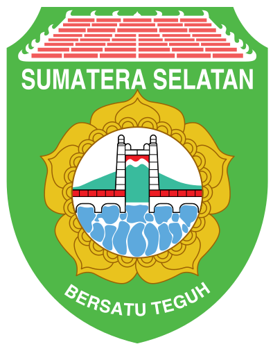
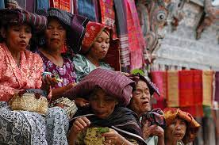
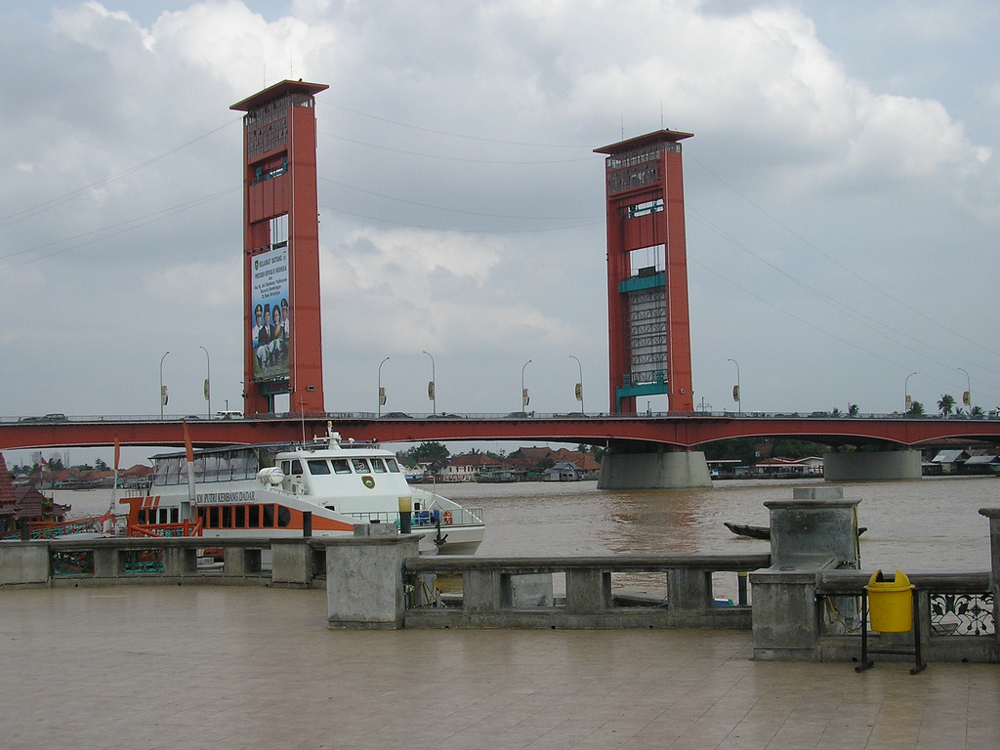

Sumatra
Nusa Tenggara
Maluku
Papua
Sumatra Selatan
Sumatra Selatan atau yang biasa disingkat Sumsel adalah provinsi di Indonesia yang terletak di bagian Selatan pulau Sumatra. Ibu kota Sumatra Selatan berada di kota Palembang, dan pada tahun 2021 penduduk provinsi ini berjumlah 8.550.849 jiwa. Secara geografis, Sumatra Selatan berbatasan dengan provinsi Jambi di utara, provinsi Kepulauan Bangka-Belitung di timur, provinsi Lampung di selatan dan Provinsi Bengkulu di barat. Provinsi ini kaya akan sumber daya alam, seperti minyak bumi, gas alam dan batu bara. Selain itu, ibu kota provinsi Sumatra Selatan, Palembang, telah terkenal sejak dahulu karena menjadi pusat Kedatuan Sriwijaya.
Informasi Umum
| Nama Provinsi | Kode Wilayah | Kode Internasional | Singkatan Umum | Ibu Kota | Hari Libur | Lambang |
|---|---|---|---|---|---|---|
| Sumatra Selatan | 16 | ID-SS | Sumsel | Palembang | 15 Mei 1946 |  |
Budaya
Rumah Belah Bubung adalah rumah adat dari kepulauan Riau yang berada di Indonesia. Rumah Belah Bubung juga dikenal dengan nama rumah rabung atau rumah bubung melayu. Rumah Belah Bubung memiliki model rumah yang sama dengan rumah panggung. Rumah ini memiliki tinggi 2 meter dari tanah dan ditopang oleh beberapa tiang penyangga. Rumah ini memiliki atap yang berbentuk seperti pelana kuda. Rumah induk terbagi menjadi 4 bagian yaitu selasar, ruang induk, ruang penghubung dapur, dan dapur. Proses pembangunan rumah pun tidak sembarangan karena harus melalui beberapa tahap yang dipercaya menghindari pemilik rumah dari kesialan. Semakin besar ukuran rumah ini memperlihatkan bahwa kemampuan ekonomi dari pemilik rumah adalah menengah ke atas, tetapi semakin kecil rumah ini menunjukkan bahwa ekonomi pemilik rumah menengah ke bawah.
Baju adat Palembang Aesan Gede merupakan pakaian yang melambangkan kesabaran. Tak hanya itu, pakaian ini juga melambangkan keagungan kerajaan Sriwijaya saat itu. Pakaian ini dibalut oleh warna merah jambu yang dipadukan dengan warna keemasan. Nilai filosofis dari Aesan Gede sendiri yaitu bahwa Sumatra layak dijuluki dengan swarnadwipa atau pulau emas. Kesan mewah ditampilkan pakaian ini dengan tambahan beberapa aksesoris seperti mahkota, bungo cempako, dan pernak pernik lainnya di baju adat Palembang Aesan Gede ini.

Tari Kebagh atau dulunya dikenal sebagai Tari Semban Bidodari adalah tari tradisi yang dikenal di daerah Besemah, Pagaralam yang bercirikan gerakan membuka lebar kedua tangan seperti mengebarkan sayap. Tari ini biasanya dipertunjukkan untuk penyambutan tamu terhormat dalam upacara adat. Tari ini merupakan jenis tarian tunggal sehingga dapat ditarikan secara massal maupun jumlah yang tidak ditentukan.
Sumatra Selatan memiliki beragam bahasa daerah, logat dan dialek yang sangat kaya dan berbeda. Bahasa daerah yang umum dipakai dan menjadi lingua franca antar suku di Sumatra Selatan adalah Bahasa Melayu Palembang. Selain itu, Di wilayah tenggara Sumatra Selatan yaitu wilayah Komering (OKU Timur dan OKI), Bahasa Komering menjadi bahasa utama di sana bagi ratusan ribu penduduknya namun di sisi lain Bahasa Ogan menjadi bahasa alternatif penghubung bagi masyarakat yang tinggal di wilayah OKU Raya (Ogan Komering Ulu, OKU Timur dan OKU Selatan). Di wilayah barat Sumatra Selatan tepatnya sepanjang dataran tinggi Gunung Dempo dan aliran Sungai Lematang, Bahasa Besemah menjadi bahasa utama antara masyarakat asli dan wilayah utara Bahasa Musi memegang peran dalam komunikasi sehari-hari masyarakat di sana.

Salah satu Upacara adat Sumatera Selatan adalah bekarang iwak. Bekarang iwak merupakan salah satu upacara adat yang berasal dari Palembang, tepatnya di Kecamatan Gandus. Bekarang dalam bahasa Palembang artinya adalah menangkap, sementara iwak merupakan ikan. Jadi tradisi bekarang iwak artinya adalah menangkap ikan. Pada upacara adat ini, seluruh warga desa akan menangkap ikan secara bersama-sama. Seluruh ikan yang ditangkap gratis dan boleh dibawa pulang. Biasanya upacara adat ini dilakukan hanya satu tahun sekali.
Tombak Trisula. Tombak ini berupa sebuah tombak kayu dengan 3 mata tajam di bagian ujungnya. Panjang tombak ini sekitar 180 cm. Pada jaman dahulu digunakan prajurit Kerajaan Sriwijaya sebagai senjata utama dalam peperangan. Senjata tradisional tersebut sering menjadi ikon budaya Provinsi Sumsel di kancah nasional. Ahli sejarah menyimpulkan, masyarakat Sumsel mulai mengenal tombak tersebut setelah budaya Hindu Siwa masuk ke Indonesia.
Gending Sriwijaya merupakan lagu dan tarian tradisional masyarakat Kota Palembang, Sumatra Selatan. Melodi lagu Gending Sriwijaya diperdengarkan untuk mengiringi Tari Gending Sriwijaya. Baik lagu maupun tarian ini menggambarkan keluhuran budaya, kejayaan, dan keagungan kemaharajaan Sriwijaya yang pernah berjaya mempersatukan wilayah Barat Nusantara.[1] Lirik lagu ini juga menggambarkan kerinduan seseorang akan zaman di mana pada saat itu Sriwijaya pernah menjadi pusat studi agama Buddha di dunia.
Kuliner

Pempek adalah makanan yang terbuat dari daging ikan yang digiling lembut yang dicampur tepung kanji atau tepung sagu, serta komposisi beberapa bahan lain seperti telur, bawang putih yang dihaluskan, penyedap rasa, dan garam. Pempek biasanya disajikan dengan kuah yang disebut cuka yang memiliki rasa asam, manis, dan pedas. Pempek merupakan makanan khas Palembang - Sumatera Selatan.
Destinasi Wisata
Jembatan Ampera adalah sebuah jembatan di Kota Palembang, Provinsi Sumatra Selatan, Indonesia. Jembatan Ampera, yang telah menjadi semacam lambang kota, terletak di tengah-tengah Kota Palembang, menghubungkan daerah Seberang Ulu dan Seberang Ilir yang dipisahkan oleh Sungai Musi. Jembatan Ampera merupakan ikon kota Palembang yang paling terkenal.